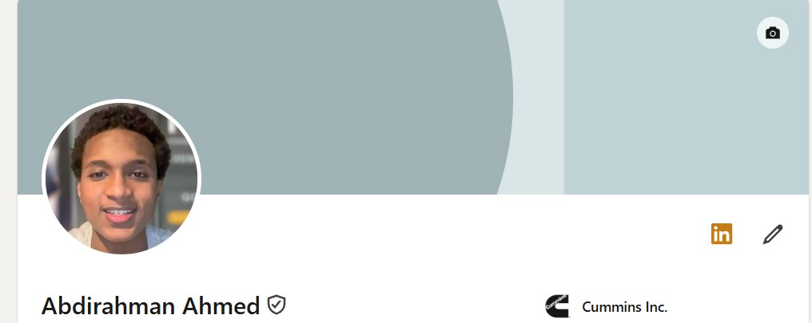

ABDIRAHMAN HUSSEIN

COMPUTER SCIENCE STUDENT
I have a strong interest in developing scalable, dependable systems and investigating how technology may address actual business problems. With experience in development, automation, and data driven apps, I enjoy creating solutions that operate well across multiple platforms.
ABOUT ME
I am presently enrolled in Queen Mary University of London pursuing a degree in Computer Science with Management. My experience includes web development, automation, and IT systems analysis. Distributed systems, data processing, and automation particularly appeal to me as they allow for the large scale influence of seemingly insignificant technical choices. I approach every project with a focus on addressing problems, working to create solutions that improve the reliability and intelligence of processes.
IMPORTANT LINKS

Connect with me professionally on LinkedIn to explore my experience and current projects.
Visit Profile
GitHub
Browse my repositories for projects in Java, Spring, and full-stack web development.
Visit GitHub
Curriculum Vitae
Review my professional CV highlighting my experience, education, and technical skills.
My CV